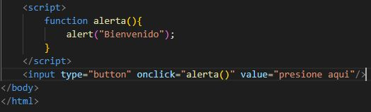
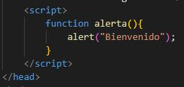
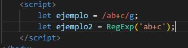
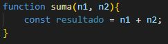
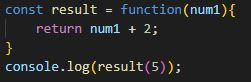
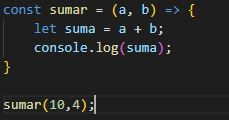

1) ¿Qué versiones de JavaScript hay en el mercado?
versiones de JavaScript en el mercado:
- 1997: ES1
- 1998: ES2
- 1999: ES3
- 2009: ES5
- 2011: ES5.1
- 2015: ES6
- 2016: ES7
- 2017: ES8
- 2018: ES9
- 2019: ES10
- 2020: ES11
- 2021: ES12
2) ¿Cómo se integra JavaScript a HTML?
Existen dos formas de integrar JS a HTML:
Forma 1: vinculando el html con el archivo JS


Desde el body
Desde el head
Forma 2: insertando contenido de JS dentro del html


Desde el body
Desde el head
3) ¿Cómo es el manejo de las variables, tipos de datos y expresiones regulares en JS?
Las variables en JS se declaran con var, let o const. Para asignar una variable con const
se le debe de dar un valor en la misma
linea de codigo en la que se declara.
Existen 8 tipos de datos:
- Undefined: variable que no se ha declarado o asignado valor
- Booleano: representa un valor lógico a la variable, true or false.
- Number: valores numéricos
- String: son cadenas de caracteres. Deben ser representadas entre comillas simples, dobles
o francesas
- BigInt: valores numeros muy grandes para ser utlizados con tipo de dato number
- Symbol: utilizado para dar valores únicos e inmutables
- Null: falta intencional de valor en una variable
- Object: utilizado para crear colecciones de datos y entidades más complejas.
- Function: Objetos capaces de ser ejecutables
Las expresiones regulares en JS son caracteres en cadena que forman un patrón de busqueda.
Existen dos formas de crear expresiones regulares en JS, usando notación literal
(patron entre barras), que proporcionan la compilación de la expresión regular cuando se
carga el script. O con el constructor de objeto (RegExp), que proporciona una compilación
en tiempo de ejecución de la expresión regular.
Otro componente importante
para las expresiones regulares son las banderas: indicadores que habilitan funciones en la
definición del patrón de la expresión regular. Por ejemplo:
- Letra g: hace una búsqueda global en toda la cadena de caracteres a analizar
- Letra i: no distingue entre mayúsculas y minúsculas al hacer la búsqueda

4) ¿Cómo son todas las formas de declaración de funciones en JS?
Diferentes formas de clarar funciones en JS:
- Function declaration: más común de todas, function seguido del nombre de la misma

- Function expression: función sin nombre y declarada dentro de una variable.

- Reemplazando la palabra function
